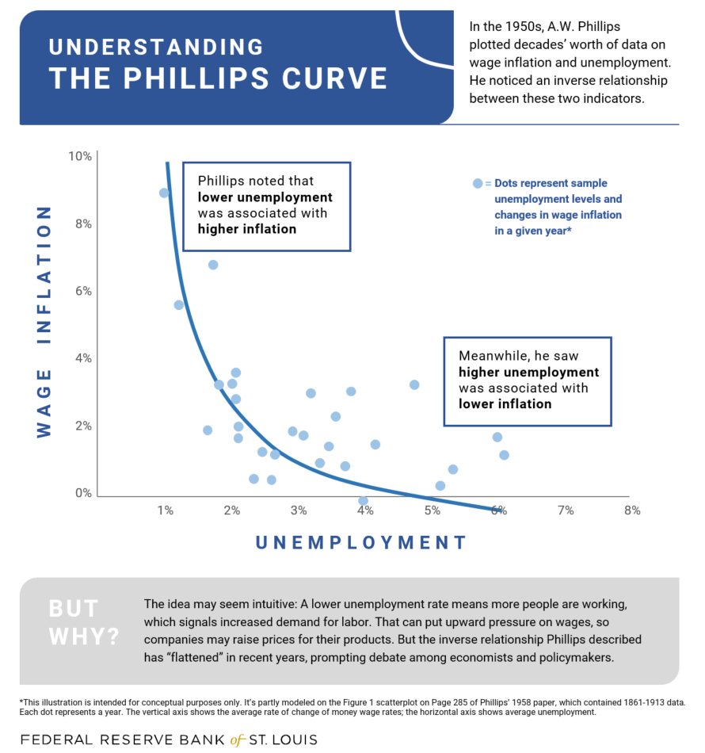

Lecture 17: Philips Curve and Okun’s Law
Mingze Huang
2021-08-04
Philips Curve
Recall Aggregate Supply curve: \(P=P^{e}\cdot (1+\mu)F(u, z)\), or substitute \(u\) to be: \(P\equiv P^{e}(1+\mu)F(1-\frac{Y^{r}}{L},z)\)

When unemployment rate (\(u\)) falls below natural rate of unemployment (\(u_{n}\)), output (\(Y'^{r}\)) goes above the natural output level (\(Y_{n}^{r}\)), the price level (\(P'\)) would be higher than expected price level (\(P^{e}\)).
When unemployment rate (\(u\)) exceeds natural rate of unemployment (\(u_{n}\)) output (\(Y'^{r}\)) goes below the natural output level (\(Y_{n}^{r}\)), the price level (\(P'\)) would be lower than expected price level (\(P^{e}\)).
Philips Curve
Here we can see some negative correlation between price and unemployment rate in short run is predicted by AS-AD model.
There is also some empirical evidence suggests the negative correlation between price (inflation) and unemployment rate. For simplicity, here we ignore the derivation to convert price into inflation but directly take a look at the empirical findings.
What Is the Phillips Curve (and Why Has It Flattened)?
In short, Phillips Curve is telling us:
Philips Curve
Note that monetary policy controlled by central bank (Federal Reserve System), and monetary policy has short run effect on price (inflation), output and unemployment rate.

In other words, there has often been some trade-off between inflation and unemployment for policymakers in central bank.
Philips Curve in History

Philips Curve in 1960s and 1970s
In 1960s, Philips Curve seems still exist. 1960s
However, inflation and unemployment rate do not show any clear relationship in 1970s. 1970s
A decade of higher inflation induced by demand side fiscal expansion (AD curve shift to the right), short run negative relation between price (inflation) and unemployment rate was broken. High inflation fail to produce low unemployment rate.
- Rational Expectation, Medium run AS-AD model became popular, eventually supply-side economics dominated 1980s’ policy discussion. (Recall “from short run to medium run” adjustment).
Okun’s Law
Recall the definition of unemployment rate: \(u=1-\frac{N}{L}=1-\frac{Y^{r}}{L}\).
Apparently by definition, the lower the unemployment rate, the higher the output (real GDP).
There is also some empirical evidence to support this relation. Here for simplicity, we still ignore the derivation to convert output level to real GDP growth.
Okun’s Law in 1970’s